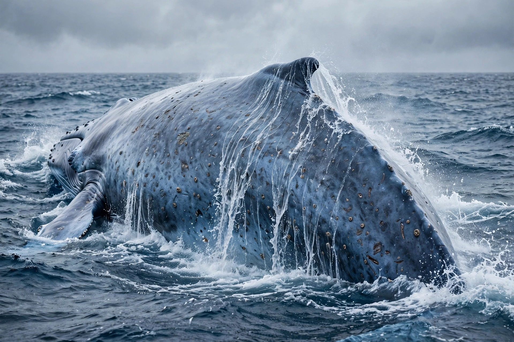

From Wikipedia, the free encyclopedia
| Blue whale | |
|---|---|
 Blue whale surfacing | |
| Scientific classification | |
| Kingdom | Animalia |
| Order | Artiodactyla |
| Family | Balaenopteridae |
| Genus | Balaenoptera |
| Species | B. musculus |
| Conservation status | Endangered (IUCN) |
The blue whale (Balaenoptera musculus) is a marine mammal and a baleen whale. Reaching a maximum confirmed length of about 29.9 metres (98 ft) and weighing up to roughly 199 tonnes, it is the largest animal known ever to have existed. The blue whale's long, slender body is variously shaded blue-grey dorsally and lighter underneath.
Blue whales feed almost exclusively on krill, filtering huge volumes of water through baleen plates; an adult can consume several tonnes of krill per day during the feeding season. Their heart alone can weigh as much as a small car, and their calls — among the loudest of any animal — can reach around 188 decibels and travel hundreds of kilometres underwater.
Four subspecies are recognised, including the Antarctic blue whale (B. m. intermedia) and the pygmy blue whale (B. m. brevicauda). Blue whales migrate between cold feeding grounds, rich in krill, and warmer breeding grounds. Populations were devastated by commercial whaling in the 20th century — around 350,000 were taken in the Southern Ocean alone — and the species was protected internationally in 1966. Numbers have slowly recovered to an estimated 10,000–25,000 individuals worldwide, though they remain a fraction of pre-whaling abundance.
Current threats include ship strikes, entanglement in fishing gear, ocean noise, and climate-driven changes in krill availability.